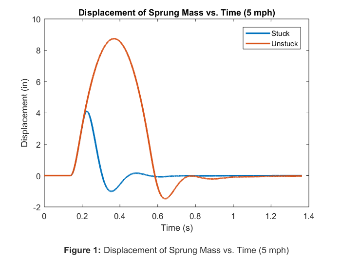
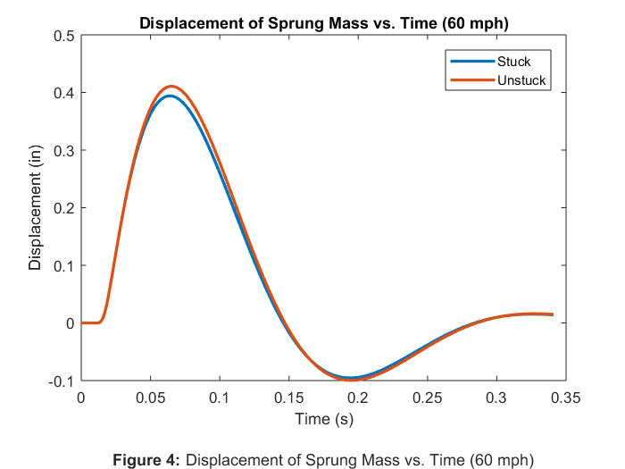
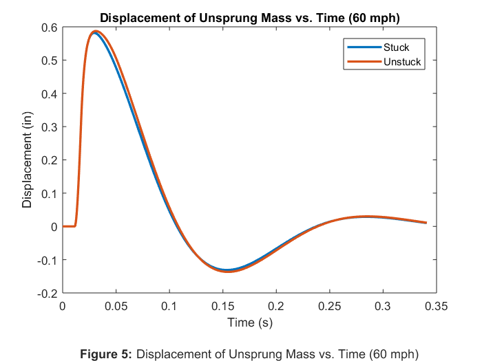
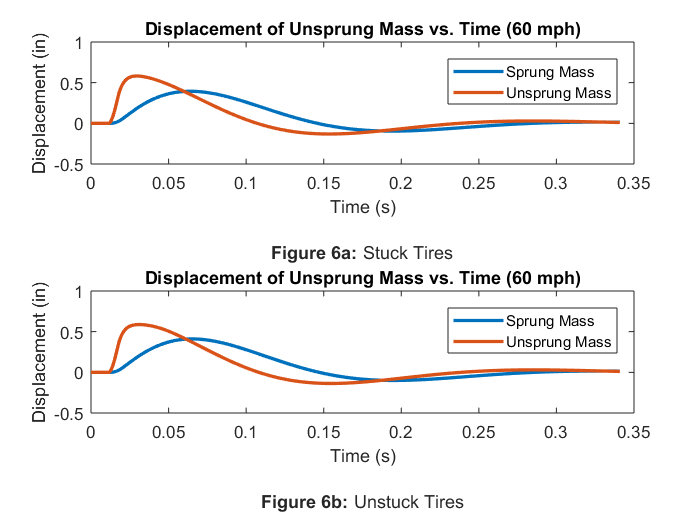

Rahul_Goyal_main Usage and Description
ME 326 Winter 2018 - Laboratory Assignment #3B
Author: RAHUL GOYAL
California Polytechnic State University, San Luis Obispo, CA
Date Created: January 30, 2018
Date Modified: February 06, 2018
Description: This script simulates the suspension of a quarter-car, modeled with state-space representation. Two models are evaluated at two separate horizontal velocities. The first model assumes that the tires never leave the ground, that is, they stick to the ground. The second model does not make this invalid assumption. This script then compares the two models: it compares the vertical displacements of the car's sprung mass across the two models, and it compares the vertical displacements of the car's unsprung mass across the two models. Additionally the script compares the relationship between the vertical displacements of the car's sprung mass and the car's unsprung mass side-by-side as an effect of each model. This is repeated for both horizontal velocities (and corresponding simulation distances) supplied.
Required Files:
- CarEOM.m - This file contains a function that represents the equations of motion for the "unstuck" simulation. It returns xdot with inputs of time, x, the A and B state-space matrices, the slope data, the horizontal velocity of the car, the tire's spring constant, the car's unsprung mass, the car's sprung weight, and the car's unsprung weight.
Called Functions
Still To Do:
- Done!
Contents
- Problem Statement
- Reset
- Set Values
- Given Values
- Solved Values
- Start a "for" Loop
- Generate a Curb Profile
- Simulating the Stuck Quarter-Car Using lsim
- Simulating the Unstuck Quarter-Car Using ode45
- End the "for" Loop
- Displacement of Sprung Mass vs. Time (5 mph)
- Displacement of Unsprung Mass vs. Time (5 mph)
- Displacement of Sprung and Unsprung Mass vs. Time (5 mph)
- Displacement of Sprung Mass vs. Time (60 mph)
- Displacement of Unsprung Mass vs. Time (60 mph)
- Displacement of Sprung and Unsprung Mass vs. Time (60 mph)
- Discussion
Problem Statement
Continue the analysis of the quarter-car model. The associated parameters will be the same as in the previous portion of the assignment. That is: wc = 750 lb, wu = 85 lb, ks = 200 lb/in, bs = 60 lb · s/in, and kt = 1600 lb/in. However, the inputs to the system will change; compute the response of your quarter-car to an approximation of a 4-inch tall by 6-inch wide curb.
Reset
The following was used while debugging.
close all; clear all; clc;
Set Values
The following is used to easily change the set horizontal velocity of the car and the corresponding simulation distances.
v_x = 22/15 * [5, 60]; % Horizontal velocity of car (ft/s) d_f = [10, 30]; % Corresponding simulation distances (ft)
Given Values
The following assigns values given by the problem statement to variables. (The value of the gravitational constant is assumed).
% Given Values w_c = 750; % Weight of car's sprung mass (lb) w_u = 85; % Weight of car's unsprung mass (lb) k_s = 200; % Spring constant of the suspension (lb/in) b_s = 60; % Damping coeff of the suspension (lb*s/in) k_t = 1600; % Spring constant of tire (lb/in) g = 32.174*12; % Gravitational constant (in/s^2) h = 4; % Height of curb (in) w = 6/12; % Width of curb (ft) % Initial conditions (y_r, y_u, y_c, yu_dot, yc_dot) ICs = [0; % Road displacement (in) 0; % Car's unsprung mass dispacement (in) 0; % Car's sprung mass displacement (in) 0; % Car's unsprung mass velocity (in/s) 0]; % Car's sprung mass velocity (in/s)
Solved Values
The following assigns values derived and/or solved from the given values to variables. See the attached sheet for hand calculations.
% Solved Values m_c = w_c/g; % Mass of car's sprung mass (slinches) m_u = w_u/g; % Mass of car's unsprung mass (slinches) % State-Space Matrices A = [0, 0, 0, 0, 0; 0, 0, 0, 1, 0; 0, 0, 0, 0, 1; k_t/m_u, -(k_s+k_t)/m_u, k_s/m_u, -b_s/m_u, b_s/m_u; 0, k_s/m_c, -k_s/m_c, b_s/m_c, -b_s/m_c]; B = [1; 0; 0; 0; 0]; C = [1, 0, 0, 0, 0; 0, 1, 0, 0, 0; 0, 0, 1, 0, 0; 0, 0, 0, 0, 0; 0, 0, 0, 1, 0; 0, 0, 0, 0, 1; 0, -k_s, k_s, -b_s, b_s]; D = [0; 0; 0; 1; 0; 0; 0];
Start a "for" Loop
The following starts a "for" loop to run the simulation at various horizontal velocities with their corresponding simulation distances (supplied above in the "Set Values" section).
for i = 1:length(v_x)
Generate a Curb Profile
The following generates a curb profile by setting a resolution, setting the curb's start position, and setting the slope impulse's width. From these, it calculates the curb's end position and the slope impulse's height. Knowing these provides all the information required for generating a curb profile.
A smaller resolution sacrifices realism for performance. My simulation provides visually indistinguishable results for resolutions greater than or equal to 1.
res = 1; % Resolution scalar (unitless)
The curb's start position is set arbitrarily (yet reasonably); the curb's end position is calculated as the curb's start position plus the width of the curb. The slope impulse's width is theoretically inifinitesimal; it is set to a value that balances realism with performance. Because integrating the slope impulse must equal the height of the curb, the slope impulse's width times the slope impulse's height must also equal the height of the curb. Thus, the slope's height is calculated as the height of the curb divided by slope impulse's width.
% Curb Positions d1 = 1; % Curb start position (ft) d2 = d1+w; % Curb end position (ft) % Slope Impulses dw = 0.001; % Slope impulse "width" (ft) k_w = h/dw; % Slope impulse "height" (in/ft)
The following creates an empty curb profile, then adds a (positive) "impulse" at from d1 to d1+dx and a (negative) "impulse" from d2 to d2+dx to simulate a Dirac delta function at the start and end conditions of the curb. The code does this by adding the calculated impulse for all values corresponding to greater than d1, then subtracting the calculated impulse for all values corresponding to greater than d1+dx. Thus, only the values between d1 and d1+dx have the calculated impulse added to them. A similar procedure, but negated, is followed to add the negative impulse to the values between d2 and d2+dx.
d = (0:dw/res:d_f(i))'; % Positions list (ft) slope = [d, zeros(size(d))]; % Empty curb profile (ft, in/ft) % Add k_w to all corresponding slopes greater than d1 slope(d>=d1, 2) = slope(d>=d1, 2) + k_w; % Subtract k_w from all corresponding slopes greater than d1 + dw slope(d>=d1+dw, 2) = slope(d>=d1+dw, 2) - k_w; % Add negative k_w to all corresponding slopes greater than d2 slope(d>=d2, 2) = slope(d>=d2, 2) - k_w; % Subtract negative k_w from all corresponding slopes greater than d2 + dw slope(d>=d2+dw, 2) = slope(d>=d2+dw, 2) + k_w; % Debugging statement % plot(slope);
The following calculates the time step and the final time to create a list of times.
t_step = (dw/v_x(i)); % Time step (s) t_f = d_f(i)/v_x(i); % Time final (s) t{i} = (0:t_step:t_f)'; % Times list (s)
Simulating the Stuck Quarter-Car Using lsim
The following simulates the stuck quarter-car using lsim. It creates a state-space system object, calculates the u values corresponding to the time values, then solves for y using lsim.
% State-Space System Object sys = ss(A, B, C, D); xr_stuck = v_x(i)*t{i}; % Corresponding distance values (ft) % Interpolate corresponding slope values from road_slope_data mr_stuck = interp1(slope(:, 1), slope(:, 2), xr_stuck); % (in/ft) u_stuck = v_x(i)*mr_stuck; % Corresponding u (yr_dot) values (in/s) % Solve for y y_stuck{i} = lsim(sys, u_stuck, t{i}); % Debugging statement % plot(t, y_stuck); % Plots y (7 variables) vs. t (stuck)
Simulating the Unstuck Quarter-Car Using ode45
The following solves the differential equation xdot = A*x + B*u using ode45. The function CarEOM, which represents this differential equation, contains logic that allows the quarter-car's tire to leave the ground. Because ode45 does not return the u values (in this case, the vertical component component of the velocity of the car) corresponding to the time and x values it returns, the main script finds them by solving for the corresponding distance values, from which it interpolates the corresponding slope values, from which it solves for the corresponding u values, the vertical component of the velocity of the car. Then, knowing the x and u values, the script solves y = C*x + D*u using matrix multiplication.
% The following line prevents ode45 from stepping over the narrow slope % impulse. options = odeset('MaxStep', t_step); % Quarter-Car Differential Equation Setup CarODE = @(t, x) CarEOM(t, x, A, B, slope, v_x(i), k_t, m_u, w_c, w_u); % Solve for x [~, x_unstuck] = ode45(CarODE, t{i}, ICs, options); xr_unstuck = v_x(i)*t{i}; % Corresponding distance values (ft) % Interpolate corresponding slope values from road_slope_data mr_unstuck = interp1(slope(:, 1), slope(:, 2), xr_unstuck); % (in/ft) u_unstuck = v_x(i)*mr_unstuck; % Corresponding u (yr_dot) values (in/s) % Solve for y y_unstuck{i} = C*x_unstuck' + D*u_unstuck'; % Debugging statement % plot(t, y_unstuck); % Plots y (7 variables) vs. t (unstuck)
End the "for" Loop
The following ends the "for" loop.
end
Displacement of Sprung Mass vs. Time (5 mph)
The following plots the vertical displacement of the sprung mass as a function of time when the horizontal velocity of the car is 5 mph, comparing the models plotted on each other.
The plot indicates a significant difference between the stuck and unstuck models at 5 mph. Whereas the stuck model exhibits a sudden shift from upward displacement to downward displacement as soon as the curb ends, the unstuck model shows a continuous upward displacement until experiencing a gradual change in direction to downward displacement, probably as a result from the energy of the compressed suspension. Both displacements eventually dampen to a steady-state of 0, as expected with no further road input.
figure;
plot(t{1}, y_stuck{1}(:, 3), t{1}, y_unstuck{1}(3, :), 'LineWidth', 2);
title('Displacement of Sprung Mass vs. Time (5 mph)');
xlabel({'Time (s)'
''
% Figure label
'\bfFigure 1: \rmDisplacement of Sprung Mass vs. Time (5 mph)'});
ylabel('Displacement (in)');
legend('Stuck','Unstuck');
 Displacement of Unsprung Mass vs. Time (5 mph)
The following plots the vertical displacement of the unsprung mass as a function of time when the horizontal velocity of the car is 5 mph, comparing the models plotted on each other.
The analysis of this plot falls in line with the analysis of the previous plot.
figure;
plot(t{1}, y_stuck{1}(:, 2), t{1}, y_unstuck{1}(2, :), 'LineWidth', 2);
title('Displacement of Unsprung Mass vs. Time (5 mph)');
xlabel({'Time (s)'
''
% Figure label
'\bfFigure 2: \rmDisplacement of Unsprung Mass vs. Time (5 mph)'});
ylabel('Displacement (in)');
legend('Stuck','Unstuck');
Displacement of Sprung and Unsprung Mass vs. Time (5 mph)
The following plots the vertical displacement of the sprung and unsprung mass as a function of time when the horizontal velocity of the car is 5 mph, comparing the stuck and unstuck models side-by-side.
As expected, the plot indicates that the unsprung mass reacts more suddenly than the sprung mass; yet, the sprung mass follows closely, probably because the horizontal velocity of the car is relatively slow at 5 mph.
figure; % Subplot (stuck) subplot(2, 1, 1); plot(t{1}, y_stuck{1}(:, 3), t{1}, y_stuck{1}(:, 2), 'LineWidth', 2); title('Displacement of Unsprung Mass vs. Time (5 mph)'); xlabel({'Time (s)' '' % Figure label '\bfFigure 3a: \rmStuck Tires'}); ylabel('Displacement (in)'); legend('Sprung Mass','Unsprung Mass'); % Subplot (unstuck) subplot(2, 1, 2); plot(t{1}, y_unstuck{1}(3, :), t{1}, y_unstuck{1}(2, :), 'LineWidth', 2); title('Displacement of Unsprung Mass vs. Time (5 mph)'); xlabel({'Time (s)' '' % Figure label '\bfFigure 3b: \rmUnstuck Tires'}); ylabel('Displacement (in)'); legend('Sprung Mass','Unsprung Mass');
Displacement of Sprung Mass vs. Time (60 mph)
The following plots the vertical displacement of the sprung mass as a function of time when the horizontal velocity of the car is 60 mph, comparing the models plotted on each other.
The plot indicates an insignificant difference between the stuck and unstuck models at 60 mph, probably because the tires do not leave the ground for long at such relatively high speeds.
figure;
plot(t{2}, y_stuck{2}(:, 3), t{2}, y_unstuck{2}(3, :), 'LineWidth', 2);
title('Displacement of Sprung Mass vs. Time (60 mph)');
xlabel({'Time (s)'
''
% Figure label
'\bfFigure 4: \rmDisplacement of Sprung Mass vs. Time (60 mph)'});
ylabel('Displacement (in)');
legend('Stuck','Unstuck');
 Displacement of Unsprung Mass vs. Time (60 mph)
The following plots the vertical displacement of the unsprung mass as a function of time when the horizontal velocity of the car is 60 mph, comparing the models plotted on each other.
The analysis of this plot falls in line with the analysis of the previous plot.
figure;
plot(t{2}, y_stuck{2}(:, 2), t{2}, y_unstuck{2}(2, :), 'LineWidth', 2);
title('Displacement of Unsprung Mass vs. Time (60 mph)');
xlabel({'Time (s)'
''
% Figure label
'\bfFigure 5: \rmDisplacement of Unsprung Mass vs. Time (60 mph)'});
ylabel('Displacement (in)');
legend('Stuck','Unstuck');
 Displacement of Sprung and Unsprung Mass vs. Time (60 mph)
The following plots the vertical displacement of the sprung and unsprung mass as a function of time when the horizontal velocity of the car is 5 mph, comparing the stuck and unstuck models side-by-side.
% As expected, the plot indicates that the unsprung mass reacts more suddenly than the sprung mass; the sprung mass displaces relatively little, probably because the horizontal velocity of the car is relatively fast at 60 mph.
figure; % Subplot (stuck) subplot(2, 1, 1); plot(t{2}, y_stuck{2}(:, 3), t{2}, y_stuck{2}(:, 2), 'LineWidth', 2); title('Displacement of Unsprung Mass vs. Time (60 mph)'); xlabel({'Time (s)' '' % Figure label '\bfFigure 6a: \rmStuck Tires'}); ylabel('Displacement (in)'); legend('Sprung Mass','Unsprung Mass'); % Subplot (unstuck) subplot(2, 1, 2); plot(t{2}, y_unstuck{2}(3, :), t{2}, y_unstuck{2}(2, :), 'LineWidth', 2); title('Displacement of Unsprung Mass vs. Time (60 mph)'); xlabel({'Time (s)' '' % Figure label '\bfFigure 6b: \rmUnstuck Tires'}); ylabel('Displacement (in)'); legend('Sprung Mass','Unsprung Mass');
Discussion
While lsim generally produces quicker results, ode45 allows for more user control. Each method is better suited for different purposes. Using lsim was easier to simulate the quarter-car assuming that the tire never leave the ground, for example, as in lab 3a. Using ode45 was easier to simulate the quarter-car if it cannot be assumed that the tires never leave the ground. Using ode45, it is easy to add logic that allows the quarter-car's tire to leave the ground because the programmer has easy access to the non-mathematical relationship between xdot and x. However, running ode45 with narrow impulses meant to simulate Dirac delta functions is tricky because ode45 often "steps" over the narrow input. Thus, the maximum step used by ode45 must be manually set for that one specific condition, slowing the entire run process. Thus, the choice between using lsim and ode45 should depend on the application.